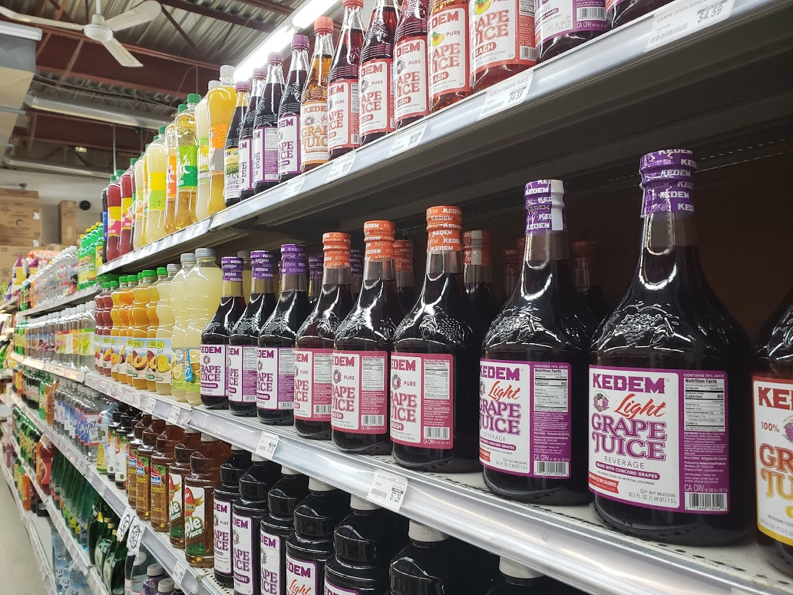
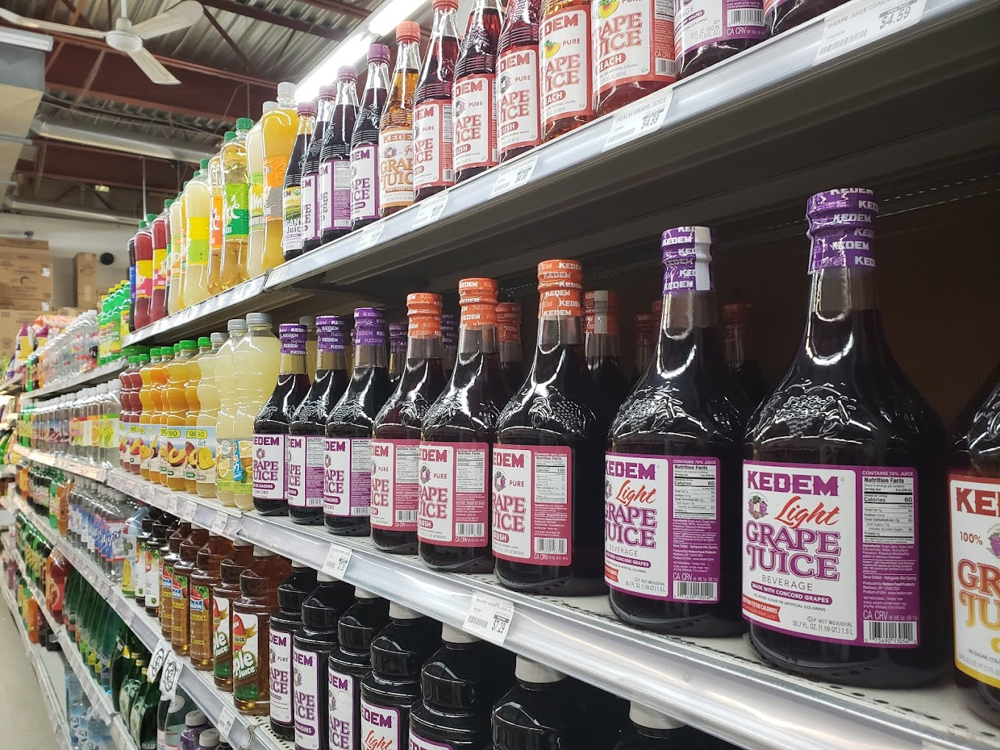
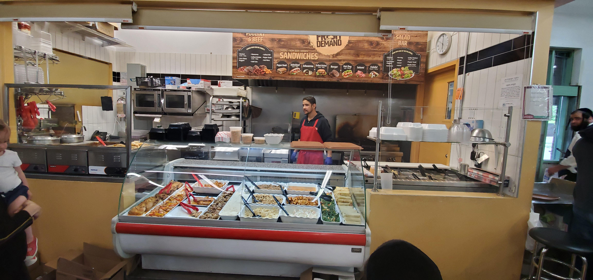

Welcome to KT Supermarket
Your trusted local community kosher grocery offering quick delivery. You can call, text, or WhatsApp your order!
Start by texting "start" to 450-924-7177 to get more information on how to use our system.
Your trusted local community kosher grocery offering quick delivery. You can call, text, or WhatsApp your order!
Start by texting "start" to 450-924-7177 to get more information on how to use our system.
KT Supermarket is dedicated to providing the freshest kosher groceries to our community. We pride ourselves on fast, friendly service and a wide selection of products. Whether you need everyday essentials or specialty items, we've got you covered.
Our mission is to offer a seamless shopping experience that combines convenience, quality, and community spirit. We continually strive to exceed our customers' expectations with our exceptional service and comprehensive product range.
Join our community and enjoy personalized shopping experiences and exclusive deals. We value our customers and strive to meet all your grocery needs with exceptional service.
At KT Supermarket, we believe in supporting our community. We regularly participate in local events and offer special promotions for our loyal customers. Our commitment to quality extends beyond our products to include our customer service. We are here to help with any questions or special requests you may have.
Enjoy our fresh glatt kosher deli, offering a wide range of Shabbos foods, dips, and takeout options. We take pride in our delicious and high-quality deli products, perfect for any occasion.
We are here to assist you with all your grocery needs. Reach out to us through any of the following methods:
Call us: 450-430-3091
Text us: 450-924-7177
WhatsApp us: 450-430-3091 (Currently not working, we are fixing it)
Email us: info@ktsupermarket.com
Our customer service team is available during store hours to answer your questions and help you with your orders. We value your feedback and look forward to serving you.

Placing an order with KT Supermarket is easy and convenient. We offer fast delivery to your doorstep.
To sign up for order updates via call or text, please call 450-430-3091 ext 500. To track your current order, call 450-430-3091 ext 500.
Phone order hours: Sunday 11:00 AM - 4:30 PM, Monday-Thursday 10:00 AM - 4:30 PM, Friday we accept case orders only until 1:00 PM.
We offer a wide variety of kosher products that cater to all your dietary needs. Whether you are looking for fresh produce, dairy products, or specialty items, we have it all. Our fast delivery service ensures that your groceries reach you in perfect condition and on time.
For any special requests or bulk orders, please contact us directly. We are here to accommodate your needs and ensure a pleasant shopping experience.
Check out what our customers are saying about us on Google Reviews. Your feedback is important to us, and we strive to improve our services based on your suggestions.
Here are some of the latest reviews from our satisfied customers:
Find us on the map below:
We are conveniently located in the heart of the community, making it easy for you to shop with us. Visit our store to experience our friendly service and wide selection of products in person.
We strive to provide flexible hours to accommodate your busy schedule. Our delivery service ensures that you receive your groceries promptly. Please note that delivery hours may vary on public holidays. For the latest updates, please contact our customer service team.